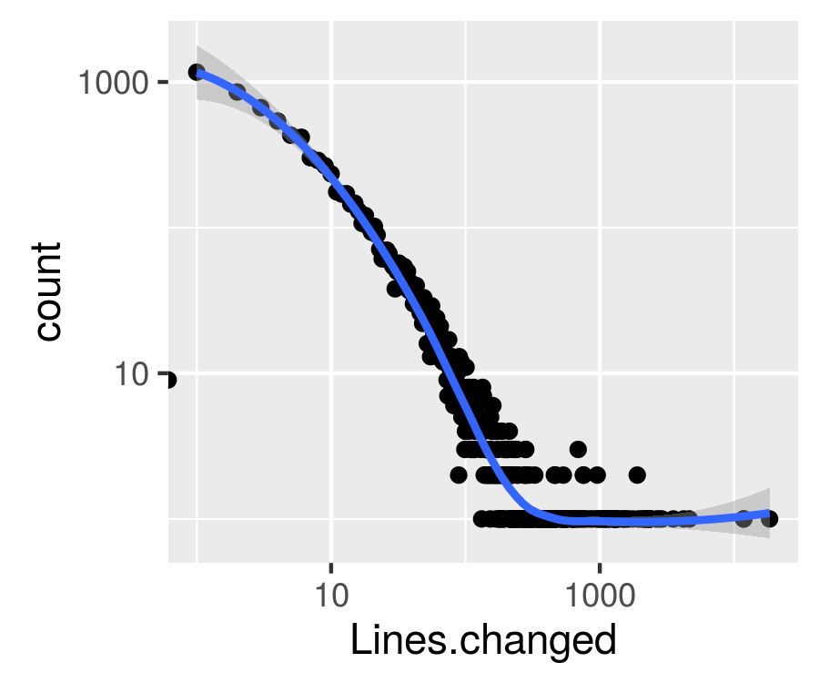
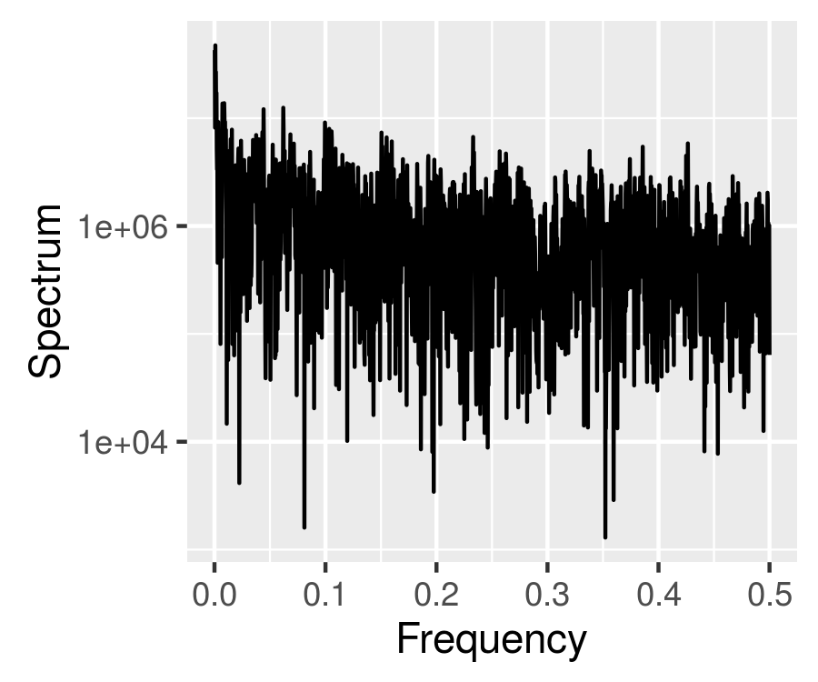

You start programming
Code code code
Code ⇔ break ⇔ rewrite ⇔ debug ⇔ code
No matter what you do
Self-organized criticality beckons
Your project code becomes
✔ Scale independent

✔ Long distance self-correlated
✔ Gets
noisy

Is that good? ☺ ☼
As
good
as gravity
Picture credits
Ken Bosma, Dune climb
Lonnie Tucker, sand cliff
Avalanche by Héctor Palayuelos
Nathan Cowlishaw, avalanche
Derek Bruff, Hourglasses 2
Carley Comartin, Only Just Begun